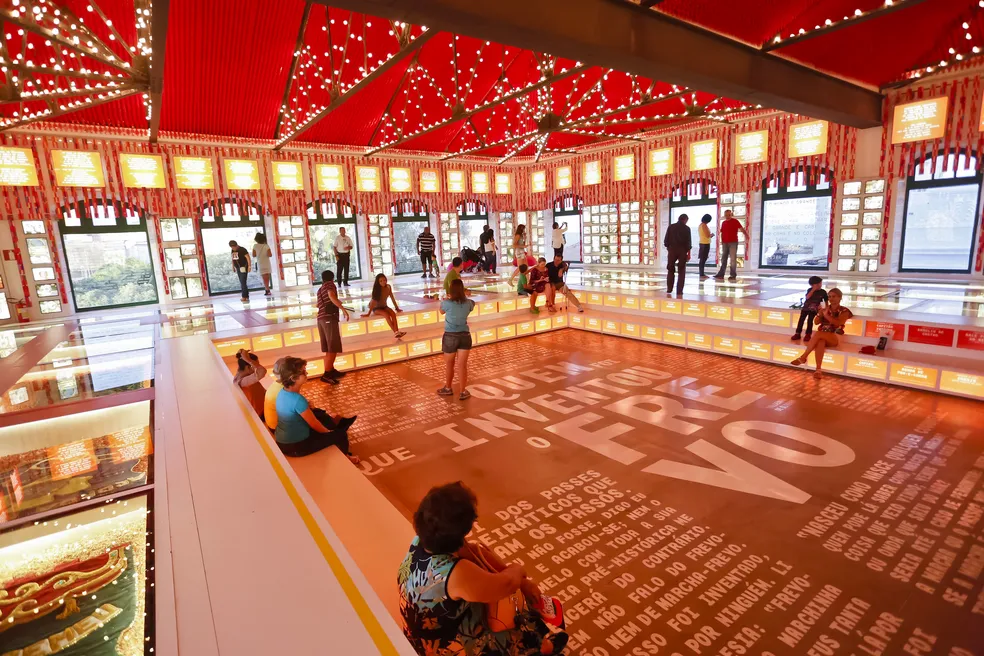
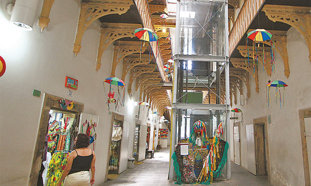

Paço do Frevo
O Paço do Frevo é um centro cultural dedicado à preservação e difusão do frevo, um ritmo musical e uma dança típicos do carnaval de Pernambuco.
Casa da Cultura
A Casa da Cultura é um antigo presídio transformado em um centro de artesanato, cultura e gastronomia regional.
